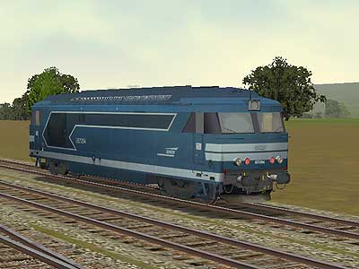
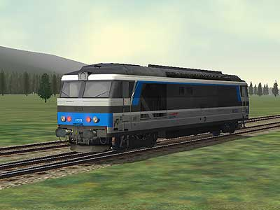
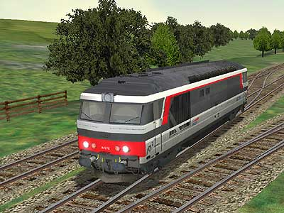
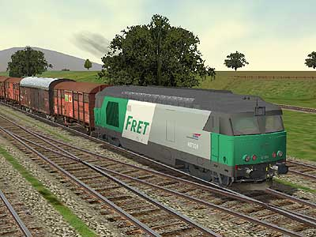
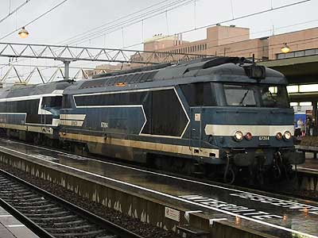
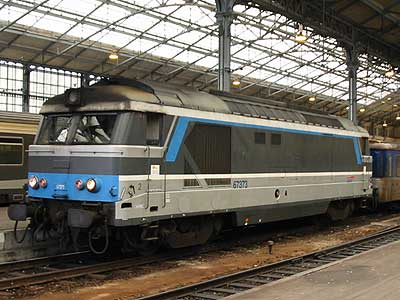
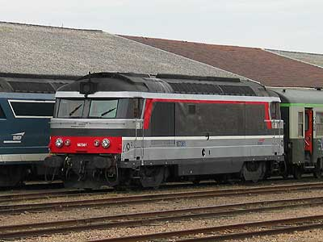
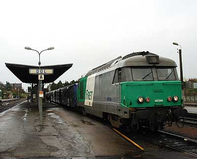
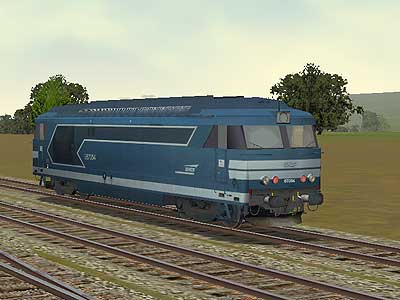
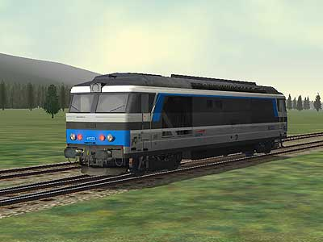

La BB 67300 version 
Les BB 67300 pour MSTS ont été réalisées par Florian Barrallon
  
Ferrovia - 09 Janvier 2004
BB 67300
La construction des BB 67000 n'avait pas encore débuté que les ingénieurs planchaient déjà sur une chaine de traction basée sur un alternateur triphasé et un redresseur en pont de diodes silicium, beaucoup plus performante, sur le papier, que la chaîne de traction à génératrice des BB 67000.
c'est la BB 67036 qui eut la délicate tâche de servir de laboratoire à ces recherches. Car il fallut un an et la destruction malheureuse de beaucoup de matériel pour maîtriser cette technologie.
Ce fut pourtant, au final, une réussite. Les BB 67300 sont moins lourdes, utilisent le moteur 16 PA 4 à sa puissance maxi de 1765 kW et peuvent chauffer les trains voyageurs. Elles sont équipées de boîtes d'essieux à rouleaux (à partir de la 67311, généralisé par la suite). De 1967 à 1969, il ne s'en produira cependant que 70 car les BB 67400 sont déjà en préparation.
L'utilisation des BB 67300 en tête de trains voyageurs s'avère être idéale. Il est d'ailleurs décidé de les bloquer en régime GV à partir de 1973. Les BB 67000 se voient dans le même temps spécialisées en PV pour la traction du fret. Devant les besoins, 19 BB 67000 de la dernière sous-série sont toutefois transformées en BB 67300 de 1975 à 1979, gagnant au passage le débridage de leur 16 PA 4, des boîtes d'essieux à rouleaux et la reversibilité. La BB 67291 (ex-67036), prototype de la série, est finalement mise au niveau et devient l'ultime 67300 : la BB 67390.
Malgré leur couple GV, certaines 67300 sont aujourd'hui affectées au fret. On citera le cas étrange de la BB 67349, équipée en reversibilité et peinte en livrée Fret. Elle a depuis rejoint le giron DPTRL et revêt une livrée multiservice. L'ensemble de la série se loge sur les lignes non électrifiées de Rhone-Alpes, Centre et Bretagne mais l'émergence des nouveaux autorails et les électrifications prévues de Rennes - St Malo et Tours - Vierzon condamnent leur avenir à moyen terme.
Quelques données techniques
Constructeur : Brissonneau et Lotz
Chaîne de traction : Alternateur triphasé, redresseur au silicium,
moteurs de traction à collecteurs et double réduction mécanique
(PV : 90 km/h, GV : 140 km/h (PV inutilisée depuis 1973))
Motorisation : moteur Diesel SEMT-Pielstick 16 PA 4-185
1 moteur de traction SW 9209 entièrement suspendu par bogie
Puissance totale: 1765 kW (moteur thermique), 1440 kW à la jante.
Longueur : 17,090 m
Masse : 80,590t
Aptitude à l'UM avec les BB 67400.
Dispositions particulières:
Machines équipées en reversibilité: 67303 à 06, 41, 44, 45, 48, 49, 51, 52, 54, 71 à 90.
Les BB 67330 à 67334 ont été équipées de tampons spéciaux pour tirer des Talgo III RD. Des tampons
classiques ont été remis depuis la fin de ce service.
Machine remarquable de la série
La 67373 ainsi que la CC 72006 ont revêtu à titre d'essai une livrée Multiservice à base de bleu Isabelle. Finalement, ce fut le même rouge que les machines électriques qui fut choisi. Mais la 67373 a conservé sa livrée unique.
Pour plus d'info:
Les BB 67300 sur Trains de France
Fiche technique des BB 67300 de Florent Brisou
L'inventaire des BB 67300 sur Trains du Sud-Ouest

La BB 67364 et une CC 72000 en véhicule à Lyon Part Dieu (10/08/2002)

La BB 67373 à Tours (10/11/2002)

La BB 67361 à Roanne (19/10/2003)

La BB 467349 à Dol de Bretagne (02/11/2002)
La BB 67300 version 
Les BB 67300 pour MSTS ont été réalisées par Florian Barrallon
 